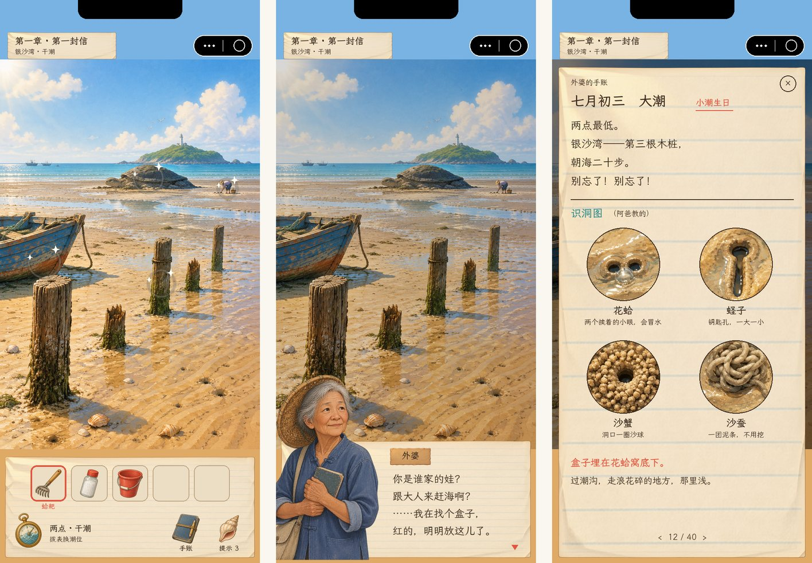
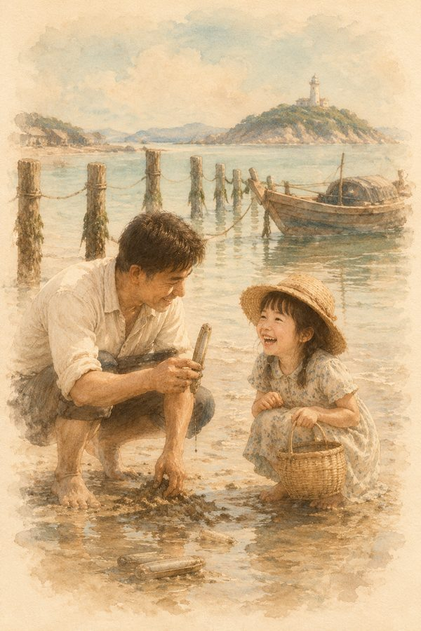

拾潮 · 立项说明书 v4（剧情解谜）
退潮的时候，海会把藏着的东西还给你。
外婆记性越来越差，每到退潮就去滩上「找东西」。你翻开她的赶海手账，才发现她要找的，是她自己趁还记得的时候、一个个埋在海边留给你的盒子。
平台 TapTap ｜ 引擎 TapTap 制造 / UrhoX（Lua 5.4）｜ 竖屏单手 · 免费 + 激励视频（只换提示）｜ 6 章 + 尾声，通关约 1.5–2 小时
状态：2026-10-27 立项，待审 ｜ v3（俯视赶海）存档见 archive/v3/，v2 见 archive/v2/


00 为什么改方向
v3 的银沙湾切片（M1）做出来、上了真机，你试玩后的结论是：

| 问题 | 原因 |
|---|---|
| 头晕 | 画面是低头看脚下：拖动时整片沙滩在不动的靴子底下滑，点洞时镜头推近、走开又拉远，靴子还跟着晃。眼睛看到在动、身体没动，和晕车、VR 晕动一个道理。 |
| 单调 | 一潮就是「看到痕迹 → 点 → 做个小动作 → 进桶」重复二十来次：没有取舍（每个都该挖）、没有未知（一眼认出、挖开就是它）、没有目标（只是钱多一点，升级只让同样的动作省点力）。把 26 种、三片滩做完也只是更多同样的事。 |
| 操作不明白 | 拔蛏子只认上划、点了没反应（已修）。根子在于同一套手势要应付所有情况，没有为具体场景设计。 |
改成剧情 + 点击解谜，正好对上这三条：
- 场景是一张张固定的插画，画面不跟手指动，换场景用切镜 → 不晕；
- 每一章的场景、谜题、回忆都是专门写的，不重复 → 不单调；
- 每个操作只为一个谜题服务，界面会告诉你能做什么 → 不迷糊。
v3 里留下来的：赶海知识（识洞、撒盐拔蛏、过潮沟、看潮汐）、海货图、手账纸片 UI、霞鹜文楷字体、音效和配乐、潮屋插画、刘海屏 / 胶囊适配、边玩边下。去掉的：滩涂刷货、红桶斤数、卖钱买工具这套经济系统。
v2 起你定过的方向继续有效：广告只做「多一次选择」（这里是「换一个提示」），不强制、不锁内容；不用系统矢量图或程序几何冒充美术；AI 素材出不来就停工反馈。
01 一句话立项
一本外婆的赶海手账，六次大潮，六个埋在海边的盒子。
| 判断 | 依据 |
|---|---|
| 品类成熟 | 点击解谜 + 剧情是国内手游长青品类：《迷失岛》系列、《锈湖》系列、《南瓜先生》都靠口碑和评分长卖；TapTap 上这类游戏评分普遍高、评论区愿意写长评 |
| 题材有空位 | 解谜游戏多是奇幻、悬疑、密室；中国沿海渔村 + 赶海知识 + 家人的题材没有强势占位 |
| 机制有记忆点 | 「潮汐怀表」：同一片海在满潮、半潮、干潮是三个样子，谜题跨潮位解（见 3.3）。这是只有海边能做、别的解谜游戏没有的 |
| 情感能传播 | 外婆、阿尔茨海默、隔代亲情——玩家会截图、会写评价；结尾那一页是天然的分享点 |
| 美术做得出 | 我们目前最好的素材就是整张插画（潮屋、标题），AI 出这类图最稳；潮位变化用同一张图编辑出来，前后一致 |
| 广告不伤体验 | 激励视频只换提示，是国内解谜游戏的常规做法，玩家接受度高，也正好是「多一次选择」 |
02 故事
2.1 设定
- 你：小潮，十来岁，第一人称、不露脸、不分性别。暑假被妈妈送到海边外婆家，那天是你的生日。
- 外婆 · 林海珠：七十多岁的赶海人，一辈子住在这个闽浙交界的小渔村。近两年记性越来越差，常常认不出人，却每次大潮都要去滩上「找东西」。
- 她的手账：几十年的赶海笔记——识洞图、潮汐表、哪块礁石下有什么。最近几页字迹发抖，写着奇怪的「路线」。
2.2 主线
你很快发现，那些路线通向一个个铁皮盒。是外婆在刚确诊、还记得事的时候，趁大潮一个一个埋下的，每个盒子里有一封写给你的信、一样旧物、一段她这辈子的回忆：
小潮：
你读到这封信的时候，外婆大概已经记不太清事了。医生说这病会越来越重。我想趁还记得，把要紧的事埋到海边——海会帮我记着。
每个盒子都在只有赶海的人才找得到的地方，手账里写了怎么找。
第一个盒子里，是我阿爸。他教会我赶海，现在轮到我教你了。
——外婆 海珠
外婆自己已经忘了埋过盒子，只记得「有个东西要找」。每找到一个盒子，旧物会让她想起一点，有那么一会儿，她会叫出你的名字。
2.3 六章
故事从农历七月初三（你的生日）到八月十八（一年里最大的潮）。每一章是一次大潮、一片新的海边、一段外婆的人生：
| 章 | 日子 · 地点 | 新的赶海玩法 | 盒子里的回忆（海珠） | 旧物 |
|---|---|---|---|---|
| 1 第一封信 | 七月初三 · 银沙湾（沙滩） | 识洞、挖蛤、撒盐拔蛏、过潮沟；潮汐怀表（满 / 干两档） | 7 岁，阿爸第一次带她赶海：「潮会退，也会回来。赶海的人要会等。」 | 老照片 |
| 2 阿凤的海螺 | 七月十六 · 黑礁湾（礁石） | 翻石、潮池、章鱼；怀表加「半潮」 | 14 岁，和最好的朋友阿凤在礁上比赛摸螺，把两人的名字刻在一只大海螺上；阿凤一家下了南洋 | 刻字海螺 |
| 3 马灯 | 七月三十 · 渔港与鱼市 | 村里人以物换物、绳结、杆秤 | 22 岁，在船坞认识修船的外公，他送她一盏马灯 | 马灯（第 5 章要用） |
| 4 台风夜 | 八月初二 · 红树林泥滩 | 泥马滑行、招潮蟹指路、潮水漫过树根的路线 | 30 岁，台风夜外公的船没回来，她抱着刚出生的妈妈在妈祖庙提着马灯等到天亮 | 外公的罗盘 |
| 5 月光 | 八月十五中秋夜 · 月光滩 | 夜赶海：只看得见灯照到的地方；蓝眼泪（荧光海）踩出脚印 | 送十八岁的妈妈去城里上大学，码头上没说出口的话 | 一封没寄出的信 |
| 6 八月十八 | 八月十八 · 沙路与灯塔岛 | 一年只露一次的沙路，在潮水回来前带外婆走到灯塔 | 你出生那天，她抱着你在窗口看退潮：「就叫小潮吧。」 | 手账的最后一页（空白） |
| 尾声 | 涨潮 | — | 最后一页由你来写 | — |
- 妈妈：前几章只在手机消息里出现（「生日快乐，妈妈忙完就来接你」）；第 5 章中秋回来，三代人在月光滩上把话说开。
- 支线 · 漂流瓶：每章藏两个漂流瓶，是阿凤这些年从南洋扔进海里的信，随潮漂回来。集齐 12 个，解锁隐藏的最后一封信（第 2 章那段友情的结局）。
- 基调：温暖、克制、不煽情；病是真实的，但游戏讲的是「记住」而不是「失去」。外婆偶尔清醒的片刻是每章的高光。结局是好的：最后一页写完，潮水回来，外婆牵着你说「小潮，潮要回来了，我们回家」。
03 怎么玩
3.1 一屏一画
- 每个地点是一张竖版插画（2:3），画里的东西就是能点的东西；点了有反应：拿起来、看近景、说一句话、换场景。
- 近景：点一处（沙地、礁缝、铁盒、手账页）切到一张近景画，里面可以继续点、挖、撒、撬。
- 换场景：画面边缘的路标或画里的路；一律淡入淡出的切镜，镜头从不平移、不推拉。
- 画面不跟手指移动，没有滚动、没有惯性。
3.2 物品与手账
- 物品栏：底部一条纸，放捡到的东西（蛤耙、盐瓶、红桶、小刀、钥匙、照片……）。点物品选中，再点画里的地方使用；长按看近景（转一转、数一数、读上面的字）。
- 外婆的手账是全游戏的线索书：识洞图、潮汐表、赶海常识、她写给自己的路线、找到的信和回忆。很多谜题的答案要你对着手账看画面（「花蛤的洞是两个挨着的小眼，会冒水」）。每章会解锁新的几页。
- 海错图鉴：每个场景藏着一两只可以发现的海错（寄居蟹、海星、玉螺、章鱼……），点到就画进手账。图鉴是收集目标，也换提示用的「海螺」。
3.3 招牌机制：潮汐怀表
外婆的旧怀表，表盘外圈画着潮位。在海边任何地方拨动它，就是「等到那个钟点」：画面淡出淡入，同一片海换成满潮 / 半潮 / 干潮的样子。
- 有的东西只在干潮露出来（礁石下的盒子、潮沟里的路）；
- 有的东西要靠满潮把它漂过去（把空桶、木板放在满潮的水上，干潮时它就搁在原本够不到的礁石上）；
- 有的生物只在某个潮位出来（半潮时招潮蟹出洞挥钳，干潮时躲回去）。
第 1 章只有满潮和干潮两档，用来教；第 2 章加半潮；第 5 章加夜晚。每章最后一个大谜题都要跨潮位解。
3.4 赶海手作
关键时刻不是点一下就过，而是用手做一小段，每段 2–5 秒，每章两三次，不会重复刷：
| 动作 | 操作 | 在哪 |
|---|---|---|
| 挖 | 在沙上来回划几下，沙一层层刮开 | 第 1、4 章 |
| 撒盐拔蛏 | 点一下撒盐 → 盯住 → 冒头时点一下就拔（早了缩回去，再来，不扣东西） | 第 1 章 |
| 翻石 | 按住石头往上拖 | 第 2 章 |
| 撬 | 按住小刀，左右摇 | 第 1、2 章 |
| 捞 | 在水里快划一下 | 第 2、5 章 |
| 拨表 / 转锁 | 拖动表针、转数字轮 | 每章 |
没有失败惩罚、没有倒计时；做错只是多试一次。
3.5 对话与提示
- 对话在底部纸片上，左边是人物半身像，点一下翻页。
- 提示分三层：方向（「外婆的手账里画过这种洞」）→ 具体（「去看看第三根木桩」）→ 直接说答案。每层花 1 个海螺（找海错得），海螺不够时可以看一段激励视频换一次。
- 每个谜题都知道你「现在卡在哪」，提示只针对当前那一步。
04 第一章完整设计 · 第一封信
农历七月初三，大潮，下午两点潮最低。约 15–20 分钟，教会：点、拿、用、看近景、查手账、拨怀表、挖、撒盐拔蛏。
4.1 场景
| 编号 | 场景 | 潮位 | 能点的 |
|---|---|---|---|
| S1 | 潮屋（内景，沿用现有插画再加凳子、抽屉） | — | 书桌手账、抽屉、工具墙、凳子、厨房盐罐、门口红桶、外公外婆的合照、窗、门 |
| S2 | 银沙湾 · 岸边 | 满 / 干 | 五根木桩（两根断了）、蓝漆旧船、远处乌龟石、潮沟、外婆（远处的小人）、漂流瓶（满潮漂着、干潮搁浅在第三根木桩边） |
| S3 | 二十步处（近景） | 干 | 花蛤双眼孔、蛏子钥匙孔、沙蟹沙球洞、沙蚕泥条、玉螺（藏） |
| S4 | 外滩 · 蛏子田 | 干 | 潮沟（浪花碎的浅处）、蛏子田、外婆、潮池里的海星（藏） |
| S5 | 乌龟石（近景） | 干 | 石头底下的缝、藤壶、沙、铁盒 |
| 近景 | 手账页、怀表、铁盒锁、手机消息、照片 | — | — |
样张（2026-10-27 第一轮）：


| 外婆（对话半身像） | 回忆插画 · 7 岁的海珠和阿爸 | 界面示意 |
|---|---|---|
 |


物品图标（蛤耙、盐瓶、红桶、漂流瓶、潮汐怀表、赶海小刀、手账、海螺）：

- 满潮版是拿干潮版用图片编辑出来的：木桩、旧船、乌龟石都在原位，旧船浮起来、乌龟石只露个顶、第三根木桩边漂着瓶子——「潮汐怀表」能做出来。
- 第三根木桩（中间那根完整的）正好对着乌龟石，第 5 步的谜题就按这张图设计。
- 近景里四种痕迹一眼分得开，识洞谜题成立。
4.2 谜题链
开场：妈妈的车开走。外婆家没人，桌上手机亮着「生日快乐，小潮」。
在潮屋里
- 书桌上的手账：今天这一页写着「七月初三 大潮 两点最低 / 银沙湾 第三根木桩 朝海二十步 / 别忘了！」
- 抽屉：找到外婆的潮汐怀表，停在十点、满潮。
- 凳子 → 工具墙：蛤耙挂得太高，把书桌下的凳子搬过去才够得着；门口拿红桶，厨房拿盐罐。
出门（十点 · 满潮）：海水淹到木桩半腰，第三根木桩边漂着一个瓶子，够不着。
- 拨怀表到两点：淡出淡入换成干潮，滩涂露出来，瓶子搁在沙上了（漂流瓶 1，支线）。
- 第三根木桩：现在只剩三根完整的，只数完整的会数错。手账里那张老速写是五根都在时画的，第三根「正对着乌龟石」。点对那根，「朝海二十步」切到近景 S3；点错的木桩近景里只有几个普通的洞，没有坏结果。
- 认洞：手账写着「盒子埋在花蛤窝底下。花蛤的洞是两个挨着的小眼，会冒水。」
- 点蛏子孔：缩回去了；点沙球洞：沙蟹横着跑掉；点泥条：「沙蚕拉的」。
- 用蛤耙挖花蛤双眼孔（手作：来回划）→ 三只花蛤 + 一个封口的小玻璃瓶。
- 瓶里纸条：「小潮——你找到第一步了。盒子在乌龟石底下。潮沟水深，别乱走。」
- ★ 第一次看到自己的名字：这些是外婆写给你的。
- 潮沟：点水：「太深了。」手账常识页：「过潮沟，走浪花碎的地方，那里浅。」在 S4 前景的潮沟里找到一段水面泛白、浪花碎开的浅滩，走过去。
- 外婆：她认不出你。「你是谁家的娃？……我在找个盒子，红的，明明放这儿了。」「我外孙女今天生日，我想给她煮蛏子汤。我腰不好，你帮我抓三只蛏子？」
- 撒盐拔蛏（手作 ×3）：在蛏子田里认出钥匙孔 → 撒盐 → 冒头时点一下。三只蛏子交给外婆，她把赶海小刀给你：「撬石头用的。我阿爸说，乌龟石底下藏宝贝。」
- 乌龟石（近景 S5）：石头底下的缝塞满了沙和藤壶。蛤耙挖沙（手作）→ 小刀撬（手作）→ 一个红色铁皮饼干盒，三位数字锁，盖子上刻着一个婴儿的小脚印。
- 密码：「你出生的时候」。今天就是你的生日，手账里每年这一页都写着「小潮生日 · 大潮 · 两点」→ 7-3-2。
开盒：第一封信 + 老照片 → 回忆插画（7 岁的海珠和阿爸，三格，配文）。
- 把照片给外婆看：「这是……我阿爸。」她看了你很久：「你是……小潮？」「生日快乐，小潮。」然后目光又飘远了。夕阳下潮水回来，画面慢慢换成满潮。
第一章完：手账里多了这一章的回忆页；海错 3 / 3，漂流瓶 1 / 2（第二个藏在旧船里，满潮时才浮出来）。
4.3 每步的提示（示例）
| 步 | 一层（方向） | 二层（具体） | 三层（答案） |
|---|---|---|---|
| 3 | 工具墙上有东西，但挂得高 | 屋里有什么能垫脚？ | 把书桌下的凳子拿去工具墙 |
| 4 | 手账说两点潮最低 | 外婆的怀表可以拨 | 把怀表拨到两点 |
| 5 | 手账里有一张木桩的速写 | 速写是很多年前画的，那时五根都在 | 断了的也要数——正对乌龟石的那根 |
| 6 | 手账里有识洞图 | 盒子在花蛤窝底下 | 两个挨着、冒水的小眼，用蛤耙挖 |
| 7 | 手账常识页说过怎么过潮沟 | 找浪花碎开的地方 | 潮沟右边泛白的那一段 |
| 11 | 盖子上刻着小脚印 | 今天是什么日子？手机里有消息 | 七月初三两点：7-3-2 |
4.4 藏着的（可选）
- 海错：寄居蟹（旧船边会动的螺壳）、玉螺（S3 沙里的小鼓包）、海星（S4 潮池）
- 漂流瓶：第三根木桩（满潮漂着、干潮捡）、旧船船舱（满潮时浮起）
- 每找到一个得 1 个海螺（提示用）
05 界面
- 顶栏（和 TapTap 胶囊同一行）：章节名 · 地点；右边让给胶囊。
- 画面：插画占满宽度、居中；上下多出来的地方用画面延伸的颜色和纸纹收边。
- 底栏（纸条）：左边潮汐怀表（到海边才出现）、中间物品栏（一行五格，可左右翻）、右边手账和提示两个按钮。
- 对话：底栏换成对话纸片，人物半身像压在纸片左上角。
- 防晕规则：画面不跟手指动；切场景 0.35 秒淡出淡入；近景是静止画面；拨怀表换潮位用交叉淡化。
- 可点区域 ≥ 44 px；点到可点的东西 100 ms 内有声音或画面反馈；点到空处有轻微的沙粒 / 水纹反馈，不说话。
- 第一次进一个场景，可点的东西会轻轻闪一下；之后只在提示时闪。
06 美术
沿用 v3 的风格：精致 2D 插画、细的暖棕轮廓线、水粉质感、午后暖光；回忆用褪色的棕褐 + 浅青水彩，四边化进纸色，像记忆里的老照片。
| 类别 | 每章 | 全部 | 做法 |
|---|---|---|---|
| 场景（2:3） | 3–4 | ~22 | 先出干潮版，再用图片编辑出满潮 / 半潮 / 夜晚版（同一构图） |
| 场景潮位变体 | 3–5 | ~25 | 同上，编辑出图，保证物件位置一致（热点不用重标） |
| 近景 | 3–5 | ~25 | 单独出图 |
| 回忆插画 | 1（2–3 格） | ~15 | 统一回忆风格常量 |
| 人物半身像 | 1–2 | 外婆（4 表情）、妈妈、阿霞、阿海叔、少女海珠、阿凤 | 先定外婆基础像，表情用编辑出；回忆里的人不要求和现在一模一样 |
| 物品图标 | 5–8 | ~40 | 透明底，和插画同一画法；v3 的海货图可直接用 |
| 片头、片尾、章节卡 | — | ~8 | — |
- 热点：每张场景出图后，我对着图标出可点区域（多边形，按图片比例坐标），用无头截图叠框核对。
- AI 素材纪律不变：风格常量 → 逐张过目 → 不合格重出；接口反复失败就停工反馈，不拿替代品凑。
07 声音
- 沿用 v3 的音效（挖、撒盐、啵、水声、蟹、翻页、盖章……），补：开盒、翻信纸、怀表上弦、拨表、切潮位的潮声、撬、绳子、马灯、荧光海。
- 配乐：每章一首主题（吉他 + 竹笛 / 八音盒 / 大提琴），回忆段落单独一首钢琴；循环淡入淡出。
- 环境声按场景和潮位换（满潮浪大、干潮远浪 + 海鸥、夜晚虫鸣）。
- 不做配音（字幕阅读节奏更适合解谜）；外婆清醒的那几句可以考虑 MiniMax 配音，M3 再定。
08 商业化与平台
- 免费，全部章节不锁。
- 激励视频只有一个用途：海螺不够时换一次提示。 不做插屏、不做内购、不做体力。前 10 分钟不出广告入口。
- 海螺来源：每章 3–5 只海错、漂流瓶；全部找齐基本不用看广告。
- 成就（Tap 成就）：每章通关、全图鉴、全漂流瓶、不用提示通关某章、发现所有外婆清醒的片刻等，约 15 个。
- 云存档：本地为主 + TapTap 云备份（沿用 v0.2 验证过的规则）。
- TapDB：每章开始 / 完成、每个谜题用时与提示次数（找出卡关点）、广告曝光与观看。
- 不做排行榜。
09 技术方案
- 数据驱动的场景脚本：场景、潮位变体、热点（多边形）、物品、对白、手账页、谜题状态都写成 Lua 表；一条条「条件 → 动作」规则（有某物品 / 某标记 / 某潮位 → 说话、给物品、设标记、切场景、播手作、播回忆）。
- 模块：场景画布（图 + 热点 + 切镜）、物品栏与物品近景、手账、潮汐怀表、对话、提示（按当前谜题给三层提示）、手作小段（挖 / 撒盐拔 / 撬 / 翻 / 捞 / 转锁，从 v3 的手势代码改）、回忆播放、存档。
- 沿用 v3：UI 组件（纸片、按钮、底部纸单、提示条）、安全区、边玩边下（每进一个场景预取下一批图）、音频、字体、录制壳与截图工具。
- 验证：无头运行时按章节自动走完整条谜题链（走查脚本），逐屏截图带刘海 + 胶囊；每章出测试二维码真机过一遍。
- 包体：场景 JPG 1024×1536 约 250–350 KB，全游戏图片预计 30–40 MB，按章边玩边下（进章节预取本章）。
10 范围
首发：6 章 + 尾声、约 22 个场景、海错图鉴（约 24 只）、12 个漂流瓶、手账、潮汐怀表、三层提示 + 激励视频、成就、云存档、TapDB。
不做：v3 的滩涂刷货、红桶斤数、卖钱买工具、每日潮汐、潮汐榜；配音（待定）；多语言。
11 里程碑
| 阶段 | 日期 | 交付 |
|---|---|---|
| M0 立项 | 10-27 – 10-28 | 本立项书、第一章完整谜题、样张、界面示意 → 你确认 |
| M1 第一章 | 10-29 – 11-04 | 解谜引擎（场景、热点、物品、手账、怀表、对话、提示、手作、回忆、存档）+ 第一章全部美术音效 → 测试二维码 |
| M2 第二、三章 | 11-05 – 11-13 | 黑礁湾、渔港；半潮；以物换物 → 测试二维码 |
| M3 第四、五章 | 11-14 – 11-21 | 红树林、月光滩；夜晚与灯光谜题；妈妈 → 测试二维码 |
| M4 第六章与平台 | 11-22 – 11-28 | 沙路与灯塔、尾声、漂流瓶结局、激励视频、成就、云存档、TapDB、商店素材 |
| M5 验收提审 | 11-29 – 12-02 | 全流程走查、真机验收、提审 |
如果要赶 11 月底前上架：首发第 1–3 章（约 45 分钟）+ 「未完待续」，第 4–6 章作为 12 月更新。哪种由你定。
12 风险与预案
| 风险 | 预案 |
|---|---|
| 谜题太难或太跳 | 每个答案都能在画面或手账里找到依据；三层提示；每章真机试玩，TapDB 看每步用时和提示次数 |
| 谜题太简单、像点点点 | 每章至少一个跨潮位的大谜题、一个要对照手账推理的谜题；手作只在关键时刻出现 |
| 潮位变体对不齐 | 用编辑出图保持构图；对不齐的物件单独出透明图叠上去；热点按每个潮位单独核对 |
| 人物前后不像 | 外婆基础像定稿后，其它表情和场景里的小人都用它做参考编辑；回忆里的人用「记忆风格」，不要求写实一致 |
| 题材敏感（阿尔茨海默） | 不拿病开玩笑、不做恐怖化；写外婆的尊严和清醒的时刻；结局温暖 |
| 内容量 vs 工期 | 引擎先行、数据驱动，后面每章主要是出图和写谜题；工期吃紧就按 11 节的分批上架 |
| AI 美术接口不稳 | 两个服务互为备份；反复失败停工反馈 |
13 验收指标（上线后看）
| 指标 | 目标 |
|---|---|
| 第 1 章完成率 | ≥ 80% |
| 通关率（玩过第 1 章的人） | ≥ 35% |
| 次日留存 | ≥ 30% |
| 平均每谜题提示次数 | ≤ 0.6 |
| 激励视频观看率（按提示入口） | 20–30% |
| TapTap 评分 | ≥ 9.0（低于 8.5 复盘） |
14 命名
产品名不变：拾潮。标语从「退潮了，赶海去。」改为 「退潮的时候，海会把藏着的东西还给你。」（短版：「潮会退，也会回来。」）商店副标题：「赶海解谜 × 外婆的手账」。
附：v3 立项书与 M1 截图 archive/v3/；v2 立项书、选品分析 archive/v2/；本版样张 style/；出图任务表 devtools/art/jobs/v4_style.json。